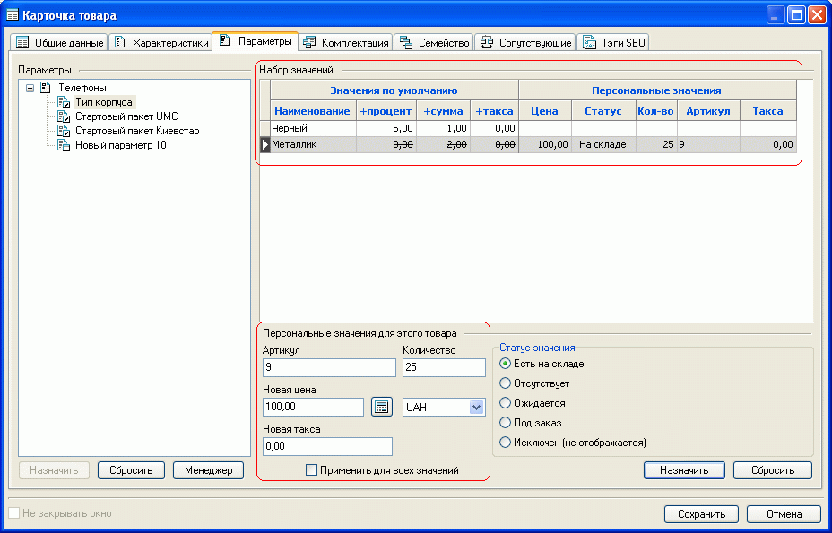
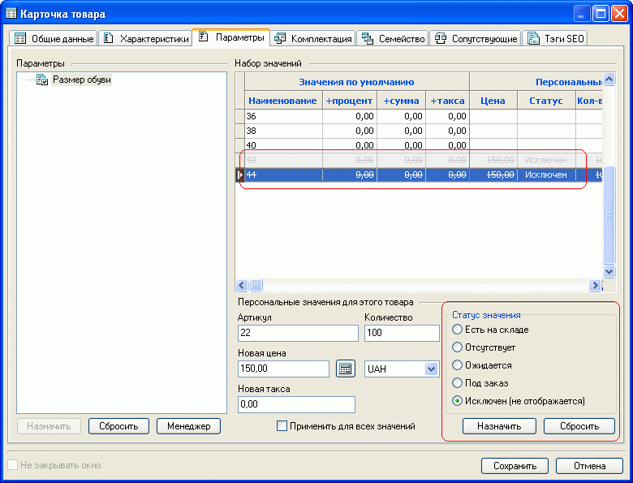
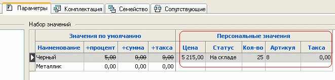
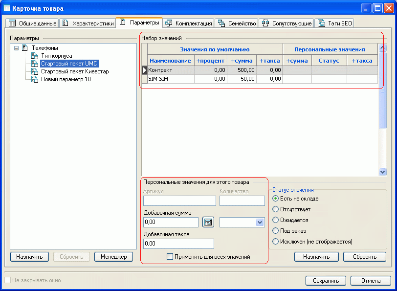

Закладка "Параметры" карточки товара позволяет указать для товара значение его изменяемого свойства, конкретное значение которого можно выбрать при покупке (например значение "Металлик" параметра "Тип корпуса"). Для предварительного формирования параметров служит менеджер параметров, где помимо прочего указывается физическая суть параметра (базовый или модификация цены).
Для "базового" параметра могут быть указаны относительные или персональные (абсолютные) значения цены, задано количество, указан статус (например, +5% при выборе черного корпуса и персональная цена 100,00 при выборе корпуса металлик):

Впоследствии, в зависимости от выбранного значения базового параметра, значение цены и таксы может быть изменено на принятое для этого параметра значение по умолчанию, или могут быть назначены персонально для данного товара новые цена и такса, указан статус и количество товара.
Также может быть определен статус значения параметра: "Есть на складе", "Отсутствует", "Ожидается", "Под заказ" или "Исключен (не отображается)". Смысл последнего статуса- "Исключен (не отображается)" таков: его задание приводит к исключению значения параметра для конкретного товара. Например если есть параметр "Размеры обуви" со значениями 36, 38, 40, 42, 44 и есть разные модели, для одной из которых возможны все значения параметра, а для второй только 36, 38 и 40, то обеим моделям можно назначить один и тот же параметр, исключив для второй значения параметра 42 и 44.
Указав "Персональные значения для этого товара" или "Статус значения", необходимо эти значения назначить, нажав кнопку "Назначить":

В то же время персональные значения вышеуказанных данных могут быть применены ко всем значениям параметров данного товара. Следует учитывать, что персональные значения параметра распространяются только на конкретный товар, а не на все товары, которым этот параметр назначен (например цена 5215,00 будет действовать только при выборе параметра "Черный" товара, в карточке которого указано данное персональное значение):

Помимо базового, товару можно назначить еще ряд параметров типа "модификация цены" одной из 10 групп. Для этих параметров могут быть назначены только относительные величины изменения цены и таксы товара:

Подробнее о типах параметров см. менеджер параметров.